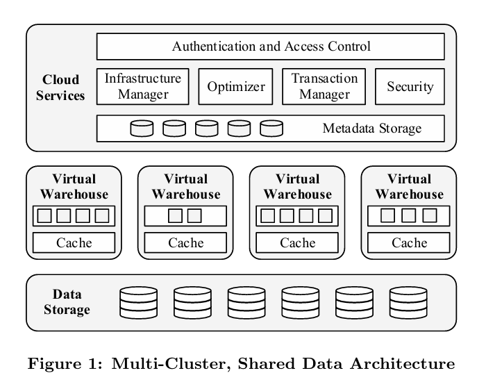
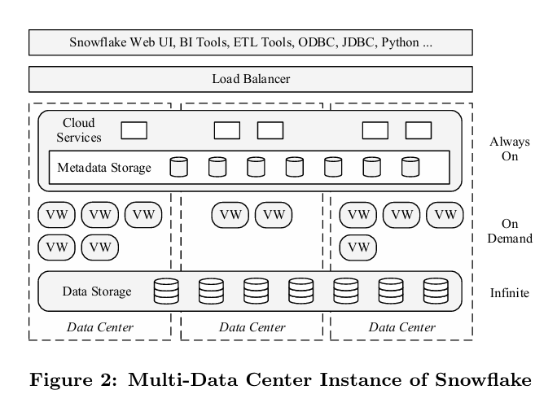
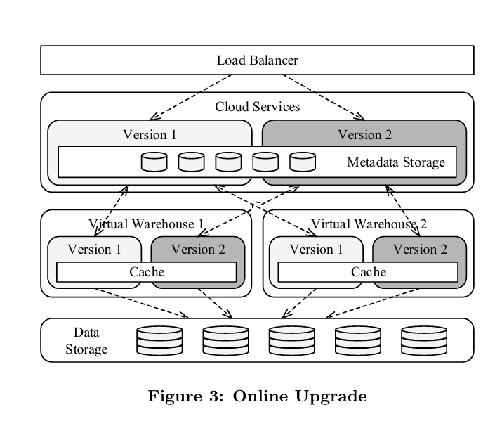
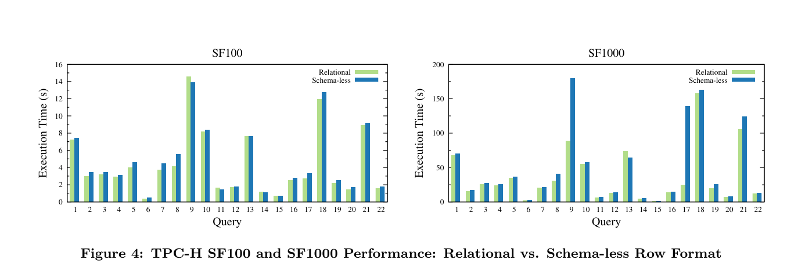
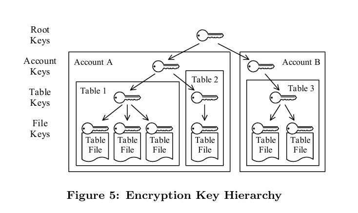

cloud-native / intermediate
Snowflake 弹性数据仓库
The Snowflake Elastic Data Warehouse
2016 · SIGMOD 2016
目录
DOI: http://dx.doi.org/10.1145/2882903.2903741
摘要
我们正处在分布式计算的黄金时代。公有云平台如今可按需提供几乎无限的计算和存储资源。与此同时，软件即服务 (SaaS) 模式将企业级系统带给了那些此前由于成本和复杂性而无法负担这些系统成本的用户。遗憾的是，传统数据仓库系统却难以适应这一新环境。一方面，它们是为固定资源设计的，因此无法利用云端的弹性。另一方面，它们对复杂 ETL 流水线和物理调优的依赖，与云端新类型半结构化数据和快速演变工作负载所要求的灵活性和时效性相矛盾。
我们认为需要进行根本性的重新设计。我们的使命是为云端构建一个企业级就绪 (enterprise-ready) 的数据仓库解决方案。其结果就是 Snowflake 弹性数据仓库，简称"Snowflake"。Snowflake 是一个多租户、事务型、安全、高度可扩展且弹性的系统，具有完整的 SQL 支持和内置的对半结构化和无 schema 数据的扩展能力。 该系统以按需付费服务的形式在 Amazon 云上提供。用户将数据上传到云端，即可使用熟悉的工具和界面立即管理和查询数据。实现工作始于 2012 年末，自 2015 年 6 月起 Snowflake 已正式通用 (GA)。如今，Snowflake 被越来越多的大小组织用于生产环境。该系统每天运行数百万查询，处理数 PB 级的数据。
本文描述了 Snowflake 的设计及其新颖的多集群共享数据 (multi-cluster, shared-data) 架构。本文重点阐述了 Snowflake 的一些关键特性：极致弹性和可用性、半结构化和无 schema 数据、时间旅行以及端到端安全。最后以经验教训和展望正在开展的工作作为总结。
分类与主题描述: 信息系统 [数据管理系统]: 数据库管理系统引擎
关键词: 数据仓库, 数据库即服务, 多集群共享数据架构
1. 引言
云端的兴起标志着从在本地服务器上交付和执行软件，转向由 Amazon、Google 或 Microsoft 等平台提供商托管的共享数据中心和 SaaS 解决方案。云的共享基础设施承诺了更高的规模经济、极致的可扩展性和可用性，以及能适应不可预测使用需求的按需付费成本模式。但这些优势只有在软件本身能够弹性地跨云端的商品化资源池进行扩展时才能实现。传统的数据仓库解决方案早于云而存在。它们被设计为运行在由规格稳定的机器组成的小型静态集群上，这使得它们在架构上先天不足。
但不仅是平台发生了变化，数据也发生了变化。过去，数据仓库中的大部分数据来自组织内部的来源：事务型系统、企业资源规划 (ERP) 应用、客户关系管理 (CRM) 应用等。数据的结构、体量和速率都是相当可预测和明确的。但在云端，一个显著且快速增长的数据份额来自难以控制的外部来源：应用日志、Web 应用、移动设备、社交媒体、传感器数据（物联网）。除了不断增长的体量外，这些数据经常以无 schema 的半结构化格式到达 [3]。传统的数据仓库解决方案在处理这类新数据时举步维艰。这些解决方案依赖深度 ETL 流水线和物理调优，这些从根本上假设数据是可预测、变化缓慢且易于分类的，主要来自内部来源。
为应对这些不足，数据仓库社区中的一部分转向了"大数据"平台，如 Hadoop 或 Spark [8, 11]。虽然这些工具是数据中心级处理任务不可或缺的工具，并且开源社区持续做出重大改进（如 Stinger Initiative [48]），但它们仍然缺乏成熟数据仓库技术的高效性和功能集。最重要的是，它们需要大量的工程工作来部署和使用 [16]。
我们相信，存在一大类能从云端的经济性、弹性和服务特性中受益的用例和工作负载，但无论是传统数据仓库技术还是大数据平台都无法很好地满足它们。于是我们决定专门为云端构建一个全新的数据仓库系统。该系统称为 Snowflake 弹性数据仓库，简称"Snowflake"。与云数据管理领域的许多其他系统不同，Snowflake 并非基于 Hadoop、PostgreSQL 或类似系统。处理引擎和大部分其他组件都是从零开始开发的。
Snowflake 的关键特性如下。
- 纯软件即服务 (SaaS) 体验。 用户无需购买机器、雇佣数据库管理员或安装软件。用户要么已经将数据放在云中，要么上传（或邮寄 [14]）数据。然后他们可以立即使用 Snowflake 的图形界面或标准接口（如 ODBC）操作和查询数据。与其他数据库即服务 (DBaaS) 产品不同的是，Snowflake 的服务特性覆盖了完整的用户体验。没有调优旋钮，没有物理设计，也没有用户需要承担的存储维护任务。
- 关系型。 Snowflake 对 ANSI SQL 和 ACID 事务有全面支持。大多数用户在迁移现有工作负载时只需很少甚至不需要修改。
- 半结构化。 Snowflake 提供内置函数和 SQL 扩展，用于遍历、展平和嵌套半结构化数据，支持流行的格式如 JSON 和 Avro。自动 schema 发现和列式存储使得对无 schema 的半结构化数据的操作几乎与对普通关系数据一样快，无需用户任何操作。
- 弹性。 存储和计算资源可以独立且无缝地弹性扩缩，不影响数据可用性或并发查询的性能。
- 高可用。 Snowflake 容忍节点、集群乃至整个数据中心的故障。软件或硬件升级期间无停机时间。
- 持久。 Snowflake 被设计为具有极高持久性，并具有防止意外数据丢失的额外保护措施：克隆、undrop 和跨区域备份。
- 成本效益高。 Snowflake 具有很高的计算效率，所有表数据都经过压缩。用户只为他们实际使用的存储和计算资源付费。
- 安全。 所有数据（包括临时文件和网络流量）都是端到端加密的。没有用户数据会被暴露给云平台。此外，基于角色的访问控制 (RBAC) 使用户能够在 SQL 级别进行细粒度访问控制。
Snowflake 目前运行在 Amazon 云 (Amazon Web Services, AWS) 上，但我们将来可能会移植到其他云平台。在撰写本文时，Snowflake 每天执行数百万查询，处理数 PB 级数据，服务于来自各个领域、快速增长的大小组织。
本文结构。 本文组织如下。第 2 节解释 Snowflake 背后的关键设计选择：存储与计算的分离。第 3 节呈现由此产生的多集群共享数据架构。第 4 节重点介绍差异化特性：持续可用性、半结构化和无 schema 数据、时间旅行和克隆、端到端安全。第 5 节讨论相关工作。第 6 节以经验教训和展望结束本文。
2. 存储 vs 计算
Shared-nothing 架构之所以成为高性能数据仓库中的主流系统架构，主要出于两个原因：可扩展性和商品化硬件。在 shared-nothing 架构中，每个查询处理器节点拥有自己的本地磁盘。表在节点之间水平分区，每个节点仅负责其本地磁盘上的行。这种设计对星形 schema 查询的扩展性很好，因为将小型（广播）维度表与大型（分区）事实表连接所需的带宽非常少。而且由于对共享数据结构或硬件资源的争用很少，因此不需要昂贵定制硬件 [25]。
在纯 shared-nothing 架构中，每个节点具有相同的职责并运行在相同的硬件上。这种方法产生了优雅的软件，易于推理，并具有良好的附加效果。然而，纯 shared-nothing 架构有一个重要缺点：它将计算资源和存储资源紧密耦合， 这在某些场景下会引发问题。
- 异构工作负载。 虽然硬件是同构的，但工作负载通常不是。对于批量加载（高 I/O 带宽、轻量计算）理想的系统配置，对复杂查询（低 I/O 带宽、重型计算）来说却很差，反之亦然。因此，硬件配置需要成为一种折中，平均利用率较低。
- 成员变更。 如果节点集合发生变化——无论是因为节点故障还是用户选择调整系统规模——大量数据需要重新洗牌。由于同一批节点同时负责数据洗牌和查询处理，可以观察到显著的性能影响，从而限制了弹性和可用性。
- 在线升级。 虽然小规模成员变更的影响可以通过复制在一定程度上缓解，但软件和硬件升级最终会影响系统中的每个节点。在原理上可以实现无系统停机的在线升级——一个接一个地升级节点——但由于一切紧密耦合且期望同构，实现起来非常困难。
在本地部署环境中，这些问题通常是可以容忍的。工作负载可能是异构的，但如果只有一个小型固定的节点池可用，则能做的不多。节点升级很少，节点故障和系统调整也是如此。
在云端情况则截然不同。像 Amazon EC2 这样的平台提供了许多不同的节点类型 [4]。利用它们只需将数据带到适当类型的节点。同时，节点故障更为频繁，即使同类型节点之间的性能也可能差异显著 [45]。因此，成员变更不是例外，而是常态。最后，有很强的动力去支持在线升级和弹性扩缩。在线升级显著缩短了软件开发周期并提高了可用性。弹性扩缩进一步提高了可用性，并允许用户将资源消费与他们的即时需求匹配。
基于这些和其他原因，Snowflake 分离了存储和计算。这两个方面由两个松耦合、可独立扩展的服务处理。计算通过 Snowflake 的（自研）shared-nothing 引擎提供。存储通过 Amazon S3 [5] 提供，虽然原则上任何类型的 blob store 都可以（Azure Blob Storage [18, 36], Google Cloud Storage [20]）。为减少 Compute 节点和 Storage 节点之间的网络流量，每个 Compute 节点在本地磁盘上缓存部分表数据。
此解决方案的一个额外好处是，本地磁盘空间不会花费在复制完整的基础数据上，这些数据可能非常大且大部分是冷的（很少访问）。相反，本地磁盘专门用于临时数据和缓存，这两者都是热的（建议使用 SSD 等高性能存储设备）。因此，一旦缓存变热，性能接近甚至超过纯 shared-nothing 系统。我们将这种新颖架构称为多集群共享数据架构 (multi-cluster, shared-data architecture)。
3. 架构
Snowflake 被设计为企业级就绪的服务。除了提供高度的可用性和互操作性之外，企业级就绪还意味着高可用性。为此，Snowflake 是一个面向服务的架构，由高容错和可独立扩展的服务组成。这些服务通过 RESTful 接口通信，分为三个架构层：
- 数据存储 (Data Storage)。 该层使用 Amazon S3 存储表数据和查询结果。
- 虚拟仓库 (Virtual Warehouses)。 系统的"肌肉"。该层在称为虚拟仓库 (VW) 的弹性虚拟机集群中处理查询执行。
- 云服务 (Cloud Services)。 系统的"大脑"。该层是一系列服务的集合，管理虚拟仓库、查询、事务以及所有相关元数据：数据库 schema、访问控制信息、加密密钥、使用统计等等。
图 1 展示了 Snowflake 的三个架构层及其主要组件。
3.1 数据存储
选择 Amazon Web Services (AWS) 作为 Snowflake 的初始平台主要出于两个原因。首先，AWS 是云平台市场上最成熟的产品。其次（与第一点相关），AWS 提供了最大的潜在用户池。
接下来的选择是在使用 S3 还是基于 HDFS 等开发自己的存储服务之间 [46]。我们花了一些时间实验 S3，发现虽然其性能可能波动，但其可用性、高可用性和强大的持久性保证是难以超越的。因此，我们没有开发自己的存储服务，而是决定将精力投入到虚拟仓库层的本地缓存和倾斜弹性技术上。
与本地存储相比，S3 自然具有高得多的访问延迟，并且每个 I/O 请求（特别是使用 HTTPS 连接时）都有更高的 CPU 开销。但更重要的是，S3 是一个 blob store，具有相对简单的基于 HTTP(S) 的 PUT/GET/DELETE 接口。对象（即文件）只能被完整（覆）写。甚至不可能在文件末尾追加数据。事实上，文件的确切大小需要在 PUT 请求中提前声明。不过，S3 确实支持对文件部分（范围）的 GET 请求。
这些属性对 Snowflake 的表文件格式和并发控制方案产生了强烈影响（参见第 3.3.2 节）。表被水平分区为大型、不可变文件，等价于传统数据库系统中的块或页。在每个文件内，每个属性或列的值被分组在一起并进行高度压缩，这在文献中称为 PAX 或混合列式格式 [2]。每个表文件有一个头，其中包含文件中每列的偏移量以及其他元数据。因为 S3 允许对文件部分进行 GET 请求，查询只需下载文件头和它们感兴趣的列即可。
Snowflake 不仅将 S3 用于表数据，还使用 S3 存储查询算子（例如大型连接）生成的临时数据（一旦本地磁盘空间耗尽），以及大型查询结果。将临时数据溢出到 S3 使得系统能够计算任意大小的查询，而不会出现内存不足或磁盘不足的错误。将查询结果存储在 S3 中实现了新型的客户端交互，并简化了查询处理，因为它消除了传统数据库系统中的服务端游标需求。
元数据（如目录对象、哪个表由哪些 S3 文件组成、统计信息、锁、事务日志等）存储在一个可扩展的事务型键值存储中，该存储是云服务层的一部分。

图 1: 多集群共享数据架构
3.2 虚拟仓库
虚拟仓库层由 EC2 实例集群组成。每个这样的集群通过一种称为虚拟仓库 (VW) 的抽象呈现给单一用户。组成 VW 的各个 EC2 实例称为 worker 节点。用户永远不会直接与 worker 节点交互。事实上，用户不知道也不关心哪些或多少个 worker 节点组成了 VW。相反，VW 以抽象的"T 恤尺寸"呈现，范围从 X-Small 到 XX-Large。这种抽象使我们能够独立于底层云平台演进服务和定价。
3.2.1 弹性与隔离
VW 是纯计算资源。它们可以在任何时候按需创建、销毁或调整大小。创建或销毁 VW 对数据库的状态没有任何影响。用户在没有查询时关闭所有 VW 是完全合法（并受鼓励）的。这种弹性使用户能够动态地将其计算资源匹配到使用需求，独立于数据体量。
每个单独的查询恰好运行在一个 VW 上。Worker 节点不在 VW 之间共享，从而为查询提供了强大的性能隔离。（话虽如此，我们认识到 worker 节点共享是未来工作的一个重要领域，因为它将在性能隔离不是主要关注的用例中实现更高的利用率和更低的成本。）
当提交新查询时，相应 VW 中的每个 worker 节点（或者如果优化器检测到小查询则是部分节点）会生成一个新的 worker 进程。每个 worker 进程只在其查询持续时间内存活。（临时进程适用于分析型工作负载，但需要一些查询启动开销。作为一个显而易见的优化，我们计划为小查询回收 worker 进程。）Worker 进程本身——即使是更新语句的一部分——永远不会导致外部可见的效果，因为表文件是不可变的，参见第 3.3.2 节。因此 Worker 故障很容易被遏制，并通过重试得到例行解决。不过，Snowflake 目前不执行部分重试，因此非常大的、长时间运行的查询是一个关注和未来工作的领域。
每个用户可以随时运行多个 VW，每个 VW 又可以运行多个并发查询。每个 VW 可以访问相同的共享表，无需物理复制数据。
共享的无限存储意味着用户可以共享和集成他们所有的数据，这是数据仓库的核心原则之一。同时，用户受益于私有的计算资源，避免了不同工作负载和组织单元之间的干扰——这是数据集市 (data marts) 存在的原因之一。这种弹性和隔离使一些新颖的使用策略成为可能。Snowflake 用户通常为来自不同组织单元的查询运行多个 VW（通常持续运行），并定期启动按需 VW，用于批量加载等场景。
与弹性相关的另一个重要观察是，通常可以以大致相同的价格获得显著更优的性能。例如，在 4 个节点上需要 15 小时的数据加载，在 32 个节点上可能只需 2 小时。（Snowflake 暴露 T 恤尺寸而非具体节点数量，但原理成立。）由于按计算小时付费，总体成本非常相似——但用户体验却截然不同。因此我们相信 VW 弹性是 Snowflake 架构最大的优势和差异之一，也表明需要一种新的设计来利用云端的独特能力。
3.2.2 本地缓存与文件窃取
每个 worker 节点在本地磁盘上维护表数据的缓存。缓存是一组表文件（即 S3 对象）的集合，这些文件曾经被该节点访问过。确切地说，缓存保存了文件头和各文件的各个列，因为查询只下载它们需要的列。缓存在 worker 节点的生命周期内存在，并在并发和后续的 worker 进程（即查询）之间共享。它只看到文件和列请求的流，并遵循简单的最近最少使用 (LRU) 替换策略，对单个查询无感知。这一简单方案的效果出奇地好，但我们将来可能会改进它，以更好地匹配不同的工作负载。
为了提高命中率，避免在 VW 的各 worker 节点之间冗余缓存单个表文件，查询优化器使用基于表文件名称的一致性哈希 [31] 将输入文件集分配给 worker 节点。后续或并发访问同一表文件的查询因此将在同一 worker 节点上进行。
Snowflake 中的一致性哈希是惰性的。当 worker 节点集合发生变化——由于节点故障或 VW 调整大小——不会立即进行数据洗牌。相反，Snowflake 依赖 LRU 替换策略最终替换缓存内容。此解决方案将替换缓存内容的成本分摊到多个查询上，从而比急切缓存或纯 shared-nothing 系统（需要立即在节点之间洗牌大量表数据）具有更好的可用性。它还简化了系统，因为没有"降级"模式。
除了缓存之外，倾斜处理在云数据仓库中尤为重要。由于虚拟化问题或网络争用，一些节点可能比其他节点执行慢得多。Snowflake 在多个层面处理此问题，其中之一是在扫描层。每当一个 worker 进程完成对其输入文件集的扫描，它会向其对等节点请求额外文件，我们将这种技术称为文件窃取 (file stealing)。如果一个对等节点在收到此类请求时发现其输入文件集中还有很多文件剩余，它会通过将当前查询的持续时间和范围内一个剩余文件的所有权转移来响应请求。请求者然后直接从 S3 下载文件，而不是从其对等节点。这种设计确保了文件窃取不会因给落后节点 (straggler) 增加额外负载而使情况更糟。
3.2.3 执行引擎
如果一个系统能用 10 个节点在相同时间内完成一个查询，而另一个系统却要使用 1000 个节点来做同样的事情，那么拥有使用 1000 个节点执行查询的能力就没有太大价值。因此，虽然可扩展性是首要的，但单节点效率同样重要。我们希望给用户提供市场上任何 DBaaS 产品中最好的性价比，因此决定实现我们自己的最先进的 SQL 执行引擎。我们构建的引擎是列式的、向量化的和推式的。
- 列式 (Columnar) 存储和执行通常被认为优于按行存储和执行，因为能更有效地利用 CPU 缓存和 SIMD 指令，以及更多（轻量级）压缩的机会 [1, 33]。
- 向量化执行 (Vectorized execution) 意味着，不同于 MapReduce [42]，Snowflake 避免物化中间结果。相反，数据以流水线方式处理，以列式格式分批处理数千行。这种方法由 VectorWise（原 MonetDB/X100 [15]）首创，节省 I/O 并极大提高缓存效率。
- 推式执行 (Push-based execution) 指的是关系算子将其结果推送给下游算子，而不是等待这些算子拉取数据（经典的 Volcano 风格模型 [27]）。推式执行提高了缓存效率，因为它从紧密循环中移除了控制流逻辑 [41]。它还使 Snowflake 能够高效处理 DAG 形状的计划，而不仅仅是树，为中间结果的共享和流水线创造了额外的机会。
同时，传统查询处理中的许多开销来源在 Snowflake 中不存在。值得注意的是，执行期间不需要事务管理。对引擎而言，查询是针对一组固定的不可变文件执行的。此外，没有缓冲区池。大多数查询扫描大量数据。这里用内存做表缓冲而不是做运算是一个糟糕的权衡。不过，Snowflake 确实允许所有主要算子（连接、group by、排序）在主内存耗尽时溢出到磁盘并递归。我们发现纯内存引擎虽然更精简、或许更快，但过于受限，无法处理所有有趣的工作负载。分析型工作负载可能具有极大的连接或聚合。
3.3 云服务
虚拟仓库是临时的、用户特定的资源。相比之下，云服务层是高度多租户的。该层的每一项服务——访问控制、查询优化器、事务管理器等——都是长期存在的，并在多个用户之间共享。多租户提高了利用率，减少了管理开销，相比传统架构（每个用户拥有完全私有的系统实例）实现了更好的规模经济。每项服务都按高可用和可扩展进行了复制。因此，单个服务节点的故障不会导致数据丢失或可用性丧失，尽管一些正在运行的查询可能会失败（并被透明地重新执行）。
3.3.1 查询管理与优化
所有用户发出的查询都经过云服务层。在这里，查询生命周期的所有早期阶段得到处理：解析、对象解析、访问控制和计划优化。
Snowflake 的查询优化器遵循典型的 Cascades 风格方法 [28]，采用自顶向下的基于成本的优化。所有用于优化的统计信息在数据加载和更新时自动维护。由于 Snowflake 不使用索引（参见第 3.3.3 节），计划搜索空间比其他一些系统更小。通过将许多决策推迟到执行时间（例如连接的数据分布类型），计划空间进一步缩小。这种设计减少了优化器做出错误决策的数量，以小幅峰值性能损失为代价增加了稳健性。这也使系统更易于使用（性能变得更可预测），符合 Snowflake 对服务体验的整体关注。
优化器完成后，生成的执行计划分发给查询涉及的所有 worker 节点。查询执行时，云服务持续跟踪查询状态以收集性能计数器并检测节点故障。所有查询信息和统计信息都被存储用于审计和性能分析。用户能够通过 Snowflake 的图形用户界面监控和分析过去和正在进行的查询。
3.3.2 并发控制
如前所述，并发控制完全由云服务层处理。Snowflake 是为分析型工作负载设计的，这类负载的特点是大型读取、批量或逐流插入以及批量更新为主。像此工作负载领域中的大多数系统一样，我们决定通过快照隔离 (Snapshot Isolation, SI) [17] 实现 ACID 事务。
在 SI 下，一个事务的所有读取看到的都是事务开始时刻数据库的一致性快照。如惯例，SI 基于多版本并发控制 (MVCC) 实现，这意味着每个已更改的数据库对象的一个副本会被保留一段时间。鉴于表文件是不可变的（使用 S3 存储的直接结果），MVCC 是一个自然选择。对文件的更改只能通过用包含更改的不同文件替换它来实现。（当然可以通过引入 redo-undo 日志（可能与 delta store 结合 [32]）来推迟对表文件的更改，但我们目前因复杂性和可扩展性原因没有采取这一思路。）因此，对表的写入操作（insert, update, delete, merge）通过相对于先前表版本添加和删除整个文件来生成表的新版本。文件的添加和删除在元数据中（在全局键值存储中）被跟踪，其形式允许非常高效地计算属于特定表版本的文件集。
除了用于 SI，Snowflake 还使用这些快照来实现时间旅行和数据库对象的高效克隆，详见第 4.4 节。
3.3.3 剪枝
将数据访问限制在与给定查询相关的数据上是查询处理最重要的方面之一。历史上，数据库中的数据访问通过使用 B+ 树或类似数据结构的索引来限制。虽然这种方法对事务处理非常有效，但对于 Snowflake 这样的系统会引发多个问题。首先，它严重依赖随机访问，由于存储介质 (S3) 和数据格式（压缩文件），这都是一个问题。其次，维护索引显著增加了数据量和数据加载时间。最后，用户需要显式创建索引——这与 Snowflake 的纯服务方法背道而驰。即使借助调优顾问，维护索引也可能是一个复杂、昂贵且有风险的过程。
最近，一种替代技术在大规模数据处理中越来越流行：基于 min-max 的剪枝 (min-max based pruning)，也称为小型物化聚合 [38]、zone maps [29] 和数据跳过 (data skipping) [49]。在这种方法中，系统维护给定数据块（记录集、文件、块等）的数据分布信息，特别是块内的最小值和最大值。根据查询谓词，这些值可用于确定某个数据块可能不需要用于某个查询。例如，假设文件 f₁ 和 f₂ 在某列 x 中分别包含值 3..5 和 4..6。那么，如果查询具有谓词 WHERE x >= 6，我们知道只需要访问 f₂。与传统索引不同，这种元数据通常比实际数据小几个数量级，存储开销小且访问快。
剪枝很好地契合了 Snowflake 的设计原则：不依赖用户输入；扩展性好；易于维护。更重要的是，它对大块数据的顺序访问效果很好，并且对加载、查询优化和查询执行时间增加的额外开销很小。
Snowflake 为每个单独的表文件维护与剪枝相关的元数据。元数据不仅涵盖纯关系列，还涵盖了半结构化数据中自动检测到的列的选择，参见第 4.3.2 节。在优化期间，元数据与查询谓词进行核对，以减少（"剪枝"）查询执行的输入文件集。优化器不仅为简单的基础值谓词执行剪枝，还为更复杂的表达式（如 WEEKDAY(orderdate) IN (6, 7)）执行剪枝。
除了这种静态剪枝，Snowflake 还在执行期间执行动态剪枝。例如，作为哈希连接处理的一部分，Snowflake 收集 build 侧记录中连接键分布的信息。此信息随后被推送到 probe 侧，用于过滤并可能跳过 probe 侧上的整个文件。这补充了其他众所周知的技术，如布隆连接 [40]。
4. 特性亮点
Snowflake 提供了关系数据仓库所期望的许多特性：全面的 SQL 支持、ACID 事务、标准接口、稳定性和安全性、客户支持，以及——当然——强大的性能和可扩展性。此外，它还引入了一些在相关系统中很少见或前所未见的其他宝贵特性。本节介绍我们认为是技术差异化的几个特性。
4.1 纯软件即服务体验
Snowflake 支持标准数据库接口（JDBC, ODBC, Python PEP-0249），并可与各种第三方工具和服务（如 Tableau, Informatica 或 Looker）配合使用。然而，它还提供了仅用 Web 浏览器即可与系统交互的可能。Web UI 看起来可能是微不足道的东西，但它很快证明自己是一个关键的差异化因素。Web UI 使得从任何位置和环境访问 Snowflake 都非常容易，显著降低了引导和使用系统的复杂度。由于大量数据已经在云端，它使得许多用户可以只需将 Snowflake 指向他们的数据即可查询，无需下载任何软件。
正如预期的那样，UI 不仅允许 SQL 操作，还提供了对数据库目录、用户和系统管理、监控、使用信息等的访问。我们不断扩展 UI 功能，在在线协作、用户反馈和支持等方面开展工作。
但我们对易用性和服务体验的关注并不止于用户界面；它延伸到系统架构的每个方面。没有故障模式，没有调优旋钮，没有物理设计，没有存储维护任务。一切只关乎数据和查询。
4.2 持续可用性
过去，数据仓库解决方案是隐藏良好的后端系统，与大部分世界隔离。在这样的环境中，停机——无论是计划的（软件升级或管理任务）还是非计划的（故障）——通常对运营没有很大影响。但随着数据分析对越来越多的业务任务变得关键，持续可用性成为任何数据仓库的重要需求。这一趋势反映了对现代 SaaS 系统的期望，其中大多数是始终在线、面向客户的应用，没有（计划内）停机。Snowflake 提供了满足这些期望的持续可用性。在这方面的两个主要技术特性是故障弹性和在线升级。

图 2: Snowflake 的多数据中心实例
4.2.1 故障弹性
Snowflake 在架构的所有层面容忍个体和关联节点故障，如图 2 所示。Snowflake 的数据存储层目前是 S3，它跨多个数据中心（在亚马逊术语中称为"可用区"(AZ)）复制。跨 AZ 复制使 S3 能够处理完整的 AZ 故障，并保证 99.99% 的数据可用性和 99.999999999% 的持久性。与 S3 架构匹配，Snowflake 的元数据存储也跨多个 AZ 分布和复制。如果一个节点故障，其他节点可以在对最终用户几乎没有影响的情况下接续活动。云服务层的其余服务由多个 AZ 中的无状态节点组成，负载均衡器在它们之间分配用户请求。由此可得，单个节点故障甚至完整 AZ 故障不会造成系统范围的影响，可能只是当前连接到故障节点的用户的一些查询会失败。这些用户将在下次查询时被重定向到不同的节点。
相比之下，虚拟仓库 (VW) 不在 AZ 之间分布。这一选择是出于性能考虑。高网络吞吐量对分布式查询执行至关重要，而网络吞吐量在同一 AZ 内显著更高。如果在查询执行期间有一个 worker 节点故障，该查询会失败但会被透明地重新执行，要么立即替换节点，要么暂时减少节点数量。为了加速节点替换，Snowflake 维护了一小池备用节点。（这些节点也用于快速的 VW 配置。）但如果整个 AZ 变得不可用，运行在该 AZ 的某个 VW 上的所有查询将失败，用户需要主动在另一个 AZ 中重新配置 VW。由于完整 AZ 故障是真正灾难性的且极其罕见的事件，我们今天接受这种部分系统不可用的场景，但希望将来能够解决。
4.2.2 在线升级
Snowflake 不仅在故障发生时提供持续可用性，在软件升级期间也是如此。系统被设计为允许多个版本的各种服务并行部署，包括云服务组件和虚拟仓库。这之所以成为可能，是因为所有服务实际上都是无状态的。所有硬状态都保存在事务型键值存储中，并通过一个映射层访问，该层负责元数据版本控制和 schema 演进。每当我们更改元数据 schema，我们确保与先前版本向后兼容。
要执行软件升级，Snowflake 首先将新版本的服务部署到先前版本旁边。用户账户随后逐步切换到新版本，此时相应用户发出的所有新查询都被定向到新版本。所有正在针对先前版本执行的查询都被允许运行至完成。一旦所有查询和用户都完成了对先前版本的使用，该版本的所有服务即被终止和退役。

图 3: 在线升级
图 3 展示了一个正在进行的升级过程的快照。有两个版本的 Snowflake 并行运行，版本 1（浅色）和版本 2（深色）。有单个云服务实例的两个版本，控制两个虚拟仓库 (VW)，每个都有两个版本。负载均衡器将传入调用定向到适当版本的云服务。一个版本的云服务只与匹配版本的 VW 通信。
如前所述，两个版本的云服务共享同一个元数据存储。更重要的是，不同版本的 VW 能够共享相同的 worker 节点及其各自的缓存。因此，升级后不需要重新填充缓存。整个过程对用户透明，没有停机或性能下降。
在线升级还对我们的开发速度以及我们处理 Snowflake 关键 bug 的方式产生了巨大影响。在撰写本文时，我们每周升级一次所有服务。这意味着我们每周发布特性和改进。为确保升级过程顺利进行，升级和降级都在 Snowflake 的特殊预生产实例中持续测试。在那些罕见的情况下，当我们在生产实例中发现关键 bug（不一定是在升级期间），我们可以非常快速地降级到先前版本，或者实现修复并执行临时升级。这个过程并不像听起来那么可怕，因为我们持续测试和演练升级/降级机制。在这一点上，它是高度自动化和健壮的。
4.3 半结构化与无 Schema 数据
Snowflake 使用三种类型扩展了标准 SQL 类型系统，用于半结构化数据：VARIANT, ARRAY 和 OBJECT。VARIANT 类型的值可以存储任何原生 SQL 类型（VARCHAR, DATE 等）的值，以及可变长度的值 ARRAY，以及类似 JavaScript 的 OBJECT（字符串到 VARIANT 值的映射）。后者在文献中也称为文档，产生了文档存储的概念（MongoDB [39], Couchbase [23]）。ARRAY 和 OBJECT 只是 VARIANT 类型的约束。内部表示是相同的：自描述的紧凑二进制序列化，支持快速的键值查找，以及高效的类型测试、比较和哈希。VARIANT 列因此可以作为连接键、分组键和排序键，就像任何其他列一样。
VARIANT 类型允许 Snowflake 以 ELT (Extract-Load-Transform) 方式而非传统 ETL (Extract-Transform-Load) 方式使用。无需指定文档 schema 或在加载时执行转换。用户可以将来自 JSON, Avro 或 XML 格式的输入数据直接加载到 VARIANT 列中；Snowflake 处理解析和类型推断（参见第 4.3.3 节）。这种方法在文献中恰当地称为"schema later"，通过将信息生产者与信息消费者以及任何中介解耦，允许 schema 演进。相比之下，传统 ETL 流水线中数据 schema 的任何更改都需要组织中多个部门之间的协调，可能需要数月才能执行。
ELT 和 Snowflake 的另一个优势在于，如果后续需要进行转换，可以使用并行 SQL 数据库的全部能力来执行，包括连接、排序、聚合、复杂谓词等操作，而这些在传统 ETL 工具链中通常是缺失或低效的。在这一点上，Snowflake 还提供了过程式用户定义函数 (UDF)，支持完整的 JavaScript 语法并与 VARIANT 数据类型集成。对过程式 UDF 的支持进一步增加了可以推入 Snowflake 中的 ETL 任务数量。
4.3.1 后关系操作
对文档最重要的操作是数据元素的提取，既可以通过字段名（对于 OBJECT），也可以通过偏移量（对于 ARRAY）。Snowflake 以函数式 SQL 记法和类似 JavaScript 的路径语法提供提取操作。内部编码使提取非常高效。子元素只是父元素内的指针；不需要复制。提取之后通常是将结果 VARIANT 值强制转换为标准 SQL 类型。同样，编码使这些强制转换非常高效。
第二个常见操作是展平 (flattening)，即将嵌套文档旋转为多个行。Snowflake 使用 SQL 横向视图来表示展平操作。这种展平可以是递归的，允许将文档的层次结构完全转换为适合 SQL 处理的关系表。与展平相反的操作是聚合。Snowflake 引入了一些新的聚合和分析函数，如 ARRAY_AGG 和 OBJECT_AGG 来服务于这一目的。
4.3.2 列式存储与处理
使用序列化（二进制）表示半结构化数据是将半结构化数据集成到关系数据库中的传统设计选择。然而，行式表示使得此类数据的存储和处理不如列式关系数据高效——这通常是将半结构化数据转换为纯关系数据的原因。
Cloudera Impala [21]（使用 Parquet [10]）和 Google Dremel [34] 已经证明半结构化数据的列式存储是可行且有益的。然而，Impala 和 Dremel（及其外部化产品 BigQuery [44]）要求用户为列式存储提供完整的表 schema。为实现无 schema 序列化表示的灵活性和列式关系数据库的性能两者兼备，Snowflake 引入了一种新颖的自动类型推断和列式存储方法。
如第 3.1 节所述，Snowflake 以混合列式格式存储数据。当存储半结构化数据时，系统自动对单个表文件内的文档集合进行统计分析，以执行自动类型推断并确定哪些（类型化）路径是频繁出现的。相应的列随后从文档中移除并单独存储，使用与原生关系数据相同的压缩列式格式。对于这些列，Snowflake 甚至像对纯关系数据一样计算物化聚合以用于剪枝（参见第 3.3.3 节）。
在扫描期间，各个列可以重组成一个 VARIANT 类型的单列。然而，大多数查询只对原始文档列的一个子集感兴趣。在这些情况下，Snowflake 将投影和强制转换表达式下推到扫描算子中，以便只访问所需的列并直接转换为目标 SQL 类型。
上述优化对每个表文件独立执行，这使得即使在 schema 演进下也能高效存储和提取。然而，它在查询优化方面确实带来了挑战，特别是剪枝方面。假设一个查询有一个基于路径表达式的谓词，我们希望使用剪枝来限制要扫描的文件集。该路径和对应列可能在大多数文件中存在，但只在部分文件中足够频繁以需要保留元数据。保守的解决方案是简单地扫描所有没有合适元数据的文件。Snowflake 通过计算文档中存在的所有路径（不是值！）上的布隆过滤器 (Bloom filters) 来改进此方案。这些布隆过滤器与其他文件元数据一起保存，并在剪枝期间由查询优化器探测。不包含给定查询所需路径的表文件可以安全跳过。
4.3.3 乐观转换
由于某些原生 SQL 类型，特别是日期/时间值，在 JSON 或 XML 等常见外部格式中表示为字符串，这些值需要在写入时（在 insert 或 update 期间）或读取时（在查询期间）从字符串转换为其实际类型。如果没有类型化 schema 或等效提示，这些字符串转换需要在读取时执行，这在读主导的工作负载中不如在写入时一次性完成转换那么高效。无类型数据的另一个问题是缺乏适合剪枝的元数据，这在日期的情景下尤为重要。（分析型工作负载经常在日期列上有范围谓词。）
但如果在写入时应用自动转换，可能会丢失信息。例如，包含数字产品标识符的字段实际上可能不是一个数字，而是一个带有重要前导零的字符串。类似地，看起来像日期的可能是文本消息的内容。Snowflake 通过执行乐观数据转换 (optimistic data conversion)，并将转换结果和原始字符串（除非存在完全可逆的转换）分别保存在不同的列中来解决问题。如果查询稍后需要原始字符串，可以轻松检索或重建。由于未使用的列不会被加载和访问，任何双存储对查询性能的影响是最小的。
4.3.4 性能
为了评估列式存储、乐观转换和剪枝在半结构化数据上对查询性能的综合效果，我们使用类 TPC-H 的数据和查询进行了一组实验。（实验结果使用忠实实现 TPC-H 数据生成和查询获得。尽管如此，数据、查询和数字未经 TPC 验证，不构成官方基准测试结果。）
我们创建了两种类型的数据库 schema。首先是常规的关系型 TPC-H schema。其次是一个"无 schema"的数据库 schema，其中每张表由单个 VARIANT 类型的列组成。然后我们生成了聚集（排序）的 SF100 和 SF1000 数据集（分别为 100 GB 和 1 TB），以纯 JSON 格式存储这些数据集（即日期变成了字符串），并使用关系和无 schema 两种数据库 schema 将这些数据加载到 Snowflake 中。没有向系统提供关于无 schema 数据的字段、类型和聚集的任何提示，也没有进行任何其他调优。然后我们在无 schema 数据库之上定义了一些视图，以便能够对所有四个数据库运行完全相同的一组 TPC-H 查询。（在撰写本文时，Snowflake 不使用视图进行类型推断或其他优化，因此这纯粹是一个语法便利。）

图 4: TPC-H SF100 和 SF1000 性能：关系 vs. 无 Schema 行格式
最后，我们使用一个中等标准仓库对所有四个数据库运行了全部 22 个 TPC-H 查询。（我们目前不披露定价和硬件细节，但中等标准仓库由非常少量的廉价 EC2 实例组成。）图 4 显示了结果。数字是通过三次热缓存运行获得的。标准误差不显著，因此从结果中省略。
可以看出，对于除两个查询（SF1000 下的 Q9 和 Q17）以外的所有查询，无 schema 存储和查询处理的开销约为 10%。对于这两个查询，我们确定减缓的原因是一个次优的连接顺序，由 distinct value 估计中的一个已知 bug 引起。我们继续在半结构化数据的元数据收集和查询优化方面进行改进。
总之，对于具有相对稳定和简单 schema 的半结构化数据（即实践中发现的大多数机器生成数据），查询性能几乎与常规关系数据的性能持平，享受了列式存储、列式执行和剪枝的所有好处——无需用户付出努力。
4.4 时间旅行与克隆
在第 3.3.2 节中，我们讨论了 Snowflake 如何在 MVCC 之上实现快照隔离 (SI)。对表的写入操作（insert, update, delete, merge）通过添加和删除整个文件来生成表的新版本。
当文件被新版本删除时，它们会被保留一段可配置的时长（目前最多 90 天）。文件保留使 Snowflake 能够非常高效地读取表的早期版本；即在数据库上执行时间旅行 (time travel)。用户可以通过 SQL 使用方便的 AT 或 BEFORE 语法访问此特性。时间戳可以是绝对的、相对于当前时间的相对值，或相对于之前语句的相对值（通过 ID 引用）。
SELECT * FROM my_table AT(TIMESTAMP =>
'Mon, 01 May 2015 16:20:00 -0700'::timestamp);
SELECT * FROM my_table AT(OFFSET => -60*5); -- 5 min ago
SELECT * FROM my_table BEFORE(STATEMENT =>
'8e5d0ca9-005e-44e6-b858-a8f5b37c5726');
甚至可以在单个查询中访问同一个表的不同版本。
SELECT new.key, new.value, old.value FROM my_table new
JOIN my_table AT(OFFSET => -86400) old -- 1 day ago
ON new.key = old.key WHERE new.value <> old.value;
基于同样的底层元数据，Snowflake 引入了 UNDROP 关键字来快速恢复意外删除的表、schema 或整个数据库。
DROP DATABASE important_db; -- whoops!
UNDROP DATABASE important_db;
Snowflake 还实现了一种我们称为克隆 (cloning) 的功能，通过新的关键字 CLONE 表示。克隆一个表能够快速创建一个具有相同定义和内容的新表，且不制作表文件的物理副本。克隆操作仅复制源表的元数据。克隆后，两个表引用同一组文件，但两个表此后可以独立修改。克隆特性还支持整个 schema 或数据库，从而允许非常高效的快照。快照是在大量批量更新之前或在执行漫长的探索性数据分析时的良好实践。CLONE 关键字甚至可以与 AT 和 BEFORE 结合，允许在事后制作此类快照。
CREATE DATABASE recovered_db CLONE important_db BEFORE(
STATEMENT => '8e5d0ca9-005e-44e6-b858-a8f5b37c5726');

图 5: 加密密钥层次结构
4.5 安全
Snowflake 被设计为在架构的所有层面保护用户数据免受攻击，包括云平台层面。为此，Snowflake 实现了双因素认证、（客户端）加密数据导入和导出、安全数据传输和存储，以及数据库对象的基于角色访问控制 (RBAC [26])。数据在任何时刻都会在通过网络发送之前以及写入本地磁盘或共享存储 (S3) 之前加密。因此，Snowflake 提供了完整的端到端数据加密和安全。
4.5.1 密钥层次结构
Snowflake 使用强大的 AES 256 位加密，并采用以 AWS CloudHSM [12] 为根的层次化密钥模型。加密密钥自动轮换和重新加密 ("rekeyed")，以确保密钥完成完整的 NIST 800-57 加密密钥管理生命周期 [13]。加密和密钥管理对用户完全透明，无需配置或管理。
Snowflake 密钥层次结构如图 5 所示，有四个层级：根密钥 (root keys)、账户密钥 (account keys)、表密钥 (table keys) 和文件密钥 (file keys)。每一层的（父）密钥加密即包装其下一层的（子）密钥。每个账户密钥对应一个用户账户，每个表密钥对应一个数据库表，每个文件密钥对应一个表文件。
层次密钥模型是良好的安全实践，因为它们限制了每个密钥保护的数据量。每一层都缩小了其下密钥的范围，如图 5 中的方框所示。Snowflake 的层次密钥模型确保在其多租户架构中用户数据的隔离，因为每个用户账户有单独的账户密钥。
4.5.2 密钥生命周期
与限制每个密钥保护的数据量正交，Snowflake 还限制了密钥可用的持续时间。加密密钥经历四个阶段：(1) 预运行的创建阶段，(2) 运行阶段，密钥用于加密（发起方使用期）和解密（接收方使用期），(3) 后运行阶段，密钥不再使用，(4) 已销毁阶段。阶段 1、3、4 的实现是简单的。阶段 2 需要限制发起方使用期和接收方使用期。只有当一个密钥不再加密任何所需数据时，它才能转到阶段 3 和 4。Snowflake 通过密钥轮换 (key rotation) 限制发起方使用期，通过重新加密 (rekeying) 限制接收方使用期。
密钥轮换 按固定间隔（例如一个月）创建新版本的密钥。每经过一个这样的间隔，创建一个新版本的密钥，前一版本的密钥被"退役"。退役版本仍然可用，但只能用于解密数据。在密钥层次结构中包装新的子密钥时，或在向表写入时，只使用最新的活动版本密钥来加密数据。
重新加密 是用新密钥重新加密旧数据的过程。在经过特定时间间隔（例如一年）后，使用已退役密钥加密的数据会用活动密钥重新加密。这种重新加密与密钥轮换是正交的。密钥轮换确保密钥从其活动状态（发起方使用）转移到退役状态（接收方使用），而重新加密确保密钥可以从其退役状态转移到被销毁。
注：源材料中缺少“表密钥生命周期”配图。
图 6 展示了单个表密钥的生命周期。假设密钥每月轮换一次，数据每年重新加密一次。表文件 1 和 2 于 2014 年 4 月使用密钥 1 版本 1 (k1v1) 创建。在 2014 年 5 月，密钥 1 被轮换到版本 2 (k1v2)，表文件 3 使用 k1v2 创建。在 2014 年 6 月，密钥 1 被轮换到版本 3 (k1v3)，又创建了两个表文件。2014 年 6 月之后不再对该表进行插入或更新。在 2015 年 4 月，k1v1 满一年，需要被销毁。创建一个新密钥——密钥 2 版本 1 (k2v1)，所有与 k1v1 关联的文件使用 k2v1 重新加密。在 2015 年 5 月，对 k1v2 发生相同的情况，表文件 3 使用 k2v2 重新加密。在 2015 年 6 月，表文件 4 和 5 使用 k2v3 重新加密。
类似的方案在账户密钥和表密钥之间以及根密钥和账户密钥之间实现。密钥层次结构的每一层（包括根密钥）都经过密钥轮换和重新加密。账户密钥和根密钥的密钥轮换和重新加密不需要重新加密文件。只有直接下级层级的密钥需要重新加密。
然而，表密钥和文件密钥之间的关系是不同的。文件密钥不是由表密钥包装的。相反，文件密钥是通过表密钥和（唯一的）文件名的组合密码学推导出来的。由此可知，每当表密钥变更时，其所有相关的文件密钥都会变更，因此受影响的表文件需要重新加密。然而，密钥推导的巨大好处是，它消除了创建、管理和传递单个文件密钥的需求。像 Snowflake 这样处理数十亿文件的系统，否则将不得不处理许多 GB 的文件密钥。我们选择此设计也是因为 Snowflake 的存储与计算分离允许它在不影响用户工作负载的情况下执行重新加密。重新加密在后台进行，使用与查询不同的 worker 节点。文件重新加密后，Snowflake 原子性地更新数据库表的元数据以指向新加密的文件。一旦所有正在进行的查询完成，旧文件即被删除。
4.5.3 端到端安全
Snowflake 使用 AWS CloudHSM 作为防篡改、高度安全的方式来生成、存储和使用密钥层次结构的根密钥。AWS CloudHSM 是一组连接到 AWS 内虚拟私有集群的硬件安全模块 (HSM)。根密钥永不离开始 HSM 设备。所有使用根密钥的密码操作都在 HSM 内部执行。因此，未经授权访问 HSM 设备，下层密钥无法被解包。HSM 还用于在账户和表级别生成密钥，包括在密钥轮换和重新加密期间。我们将 AWS CloudHSM 配置为高可用配置，以最小化服务中断的可能性。
除了数据加密之外，Snowflake 还通过以下方式保护用户数据：
- 通过 S3 上的访问策略隔离存储。
- 用户账户内的基于角色访问控制，用于对数据库对象的细粒度访问控制。
- 加密数据导入和导出，云提供商 (Amazon) 永远不会看到明文数据。
- 双因素和联邦认证，用于安全的访问控制。
总之，Snowflake 提供了一个以 AWS CloudHSM 为根的层次密钥模型，使用密钥轮换和重新加密确保加密密钥遵循标准化的生命周期。密钥管理对用户完全透明，无需配置、管理或停机。它是实现完整端到端加密和安全的全面安全策略的一部分。
5. 相关工作
基于云的并行数据库系统。 Amazon 拥有许多 DBaaS 产品，Amazon Redshift 是其中数据仓库类的产品。Redshift 已从并行数据库系统 ParAccel 演进而来，可以说是第一个真正作为服务提供的数据仓库系统 [30]。Redshift 使用经典的 shared-nothing 架构。因此，虽然它是可扩展的，但添加或移除计算资源需要数据再分布。相比之下，Snowflake 的多集群共享数据架构允许用户在不进行数据移动的情况下瞬间扩展、缩减甚至暂停计算（独立于存储）——包括跨隔离计算资源集成数据的能力。此外，遵循纯服务原则，Snowflake 不需要用户进行物理调优、数据维护、手动收集表统计信息或表 vacuuming。虽然 Redshift 可以将 JSON 等半结构化数据作为 VARCHAR 摄入，但 Snowflake 具有对半结构化数据的原生支持，包括列式存储等重要优化。
Google 的 Cloud Platform 提供一个全托管查询服务 BigQuery [44]，这是 Dremel [34] 的公开实现。BigQuery 服务允许用户以令人印象深刻的速度在 TB 级数据上运行查询，并行化跨数千节点。Snowflake 的灵感之一来自 BigQuery 对 JSON 和嵌套数据的支持，我们认为这是现代分析平台所必需的。但虽然 BigQuery 提供类似 SQL 的语言，它与 ANSI SQL 语法和语义有一些根本性偏差，使其难以与基于 SQL 的产品一起使用。此外，BigQuery 表是仅追加的，并且需要 schema。相比之下，Snowflake 提供完整的 DML (insert, update, delete, merge)、ACID 事务，且对半结构化数据不要求 schema 定义。
Microsoft SQL Data Warehouse (Azure SQL DW) 是 Azure 云平台的新近添加，基于 SQL Server 及其 Analytics Platform System (APS) 设备 [35, 37] 提供服务。与 Snowflake 类似，它将存储与计算分离。计算资源可通过数据仓库单元 (DWU) 进行扩展。然而，并发度有上限。对于任何数据仓库，同时执行的查询的最大数量是 32 [47]。而 Snowflake 则允许通过虚拟仓库完全独立扩展并发工作负载。Snowflake 用户也从选择适当分布键和其他管理任务的负担中解放出来。虽然 Azure SQL DW 通过 PolyBase [24] 支持对非关系数据的查询，但它没有可比的 Snowflake VARIANT 类型及相关的内置半结构化数据支持和相关优化。
文档存储与大数据。 近年来，像 MongoDB [39]、Couchbase Server [23] 和 Apache Cassandra [6] 这样的文档存储在应用开发者中越来越流行，因为它们具有可扩展性、简单性和 schema 灵活性。然而，这些系统的简单键值和 CRUD API 带来的一个挑战是表达更复杂查询的困难。作为回应，我们看到几种类似 SQL 的查询语言的出现，如 Couchbase 的 N1QL [22] 或 Apache Cassandra 的 CQL [19]。此外，许多"大数据"引擎现在支持对嵌套数据的查询，例如 Apache Hive [9]、Apache Spark [11]、Apache Drill [7]、Cloudera Impala [21] 和 Facebook Presto [43]。我们相信这显示了对无 schema 和半结构化数据进行复杂分析的真正需求，而我们对半结构化数据的支持受到这些系统中许多的启发。通过使用 schema 推断、乐观转换和列式存储，Snowflake 将这些系统的灵活性与关系型列式数据库的存储效率和执行速度相结合。
6. 经验教训与展望
当 Snowflake 于 2012 年成立时，数据库世界完全聚焦于 SQL on Hadoop，短时间内出现了超过十多个系统。当时，朝着完全不同的方向工作——为云端构建一个"经典的"数据仓库系统——的决定似乎是一个逆向而冒险的举动。经过 3 年的开发，我们确信这是正确的。Hadoop 没有取代 RDBMS；它补充了 RDBMS。人们仍然想要关系数据库，但是是一个更高效、更灵活、更适合云端的数据库。
Snowflake 满足了我们对于一个为云端构建的系统能为其用户和其作者带来什么的期望。多集群共享数据架构的弹性改变了用户处理数据处理任务的方式。SaaS 模式不仅使用户易于尝试和采纳系统，还极大地帮助了我们的开发和测试。通过单一生产版本和在线升级，我们能够比在传统开发模式下可能做到的速度快得多地发布新特性、提供改进和修复问题。
虽然我们希望半结构化扩展会证明有用，但我们对其采用速度感到惊讶。我们发现了一个非常流行的模式，组织会将 Hadoop 用于两件事：存储 JSON，以及将其转换为可以加载到 RDBMS 中的格式。通过提供能够以原始格式高效存储和处理半结构化数据的系统——在其之上有强大的 SQL 接口——我们发现 Snowflake 不仅取代了传统数据库系统，还取代了 Hadoop 集群。
当然，这不是一段无痛的旅程。虽然我们的团队拥有累计超过 100 年的数据库开发专业知识，但我们在过程中确实犯了一些可以避免的错误，包括对某些关系算子的早期实现过于简化、没有在引擎中及早纳入所有数据类型、对资源管理的关注不够早、推迟了全面的日期和时间功能的工作等。此外，我们持续关注避免调优旋钮引发了的一系列工程挑战，最终带来了许多令人兴奋的技术解决方案。结果，如今 Snowflake 只有一个调优参数：用户想要多少性能（并愿意为此付费）。
虽然 Snowflake 的性能已经非常有竞争力，特别是考虑到无调优的特性，但我们知道还有许多我们尚未有时间实现的优化。不过有些出乎意料的是，核心性能几乎从来不是我们用户的问题。原因是通过虚拟仓库的弹性计算可以提供偶尔需要的性能提升。这使我们将开发工作精力集中在系统的其他方面。
我们面临的最大技术挑战与系统的 SaaS 和多租户特性相关。构建一个能支持数百用户并发的元数据层是一个非常具有挑战性和复杂的任务。处理各种类型的节点故障、网络故障和支持服务是一场永无休止的战斗。安全一直并将继续是一个大话题：保护系统和用户数据免受外部攻击、保护用户自身以及我们的内部用户。维护一个数百节点每天运行数百万查询的生产系统，在带来很大满足感的同时，要求对开发、运营和支持采取高度集成的方法。
Snowflake 用户继续向系统抛出越来越大、越来越复杂的问题，影响着它的演进。我们目前正在通过提供额外的元数据结构和数据重组任务来改进数据访问性能——专注于最少以至无需用户交互。我们继续改进和扩展核心查询处理功能，既包括标准 SQL 也包括半关系扩展。我们计划进一步改进倾斜处理和负载均衡策略，其重要性随着用户工作负载规模的增加而增加。我们致力于简化用户的工作负载管理的解决方案，使系统更具弹性。我们还在进行与外部系统的集成工作，包括高频数据加载等问题。
Snowflake 未来最大的挑战是过渡到完全自助服务模式，用户可以在任何阶段无需我们参与就能注册并与系统交互。这将带来很多安全、性能和支持方面的挑战。我们对它们充满期待。
7. 致谢
Snowflake 是太多人的工作，无法在此一一列举。我们要感谢整个 Snowflake 工程团队对产品的贡献，以及他们投入的全部辛勤工作、努力和自豪。我们还要感谢所有其他"Snowflakes"，感谢他们在将这一产品带给用户和共同建设一家伟大公司方面所做的了不起的工作。能与如此卓越的团队共事，我们持续感到敬佩和谦卑。
8. 参考文献
[1] D.J. Abadi, S.R. Madden, and N. Hachem. Column-stores vs. row-stores: How different are they really? In Proc. SIGMOD, 2008.
[2] A. Ailamaki, D.J. DeWitt, M.D. Hill, and M. Skounakis. Weaving relations for cache performance. In Proc. VLDB, 2001.
[3] S. Alsubaiee et al. AsterixDB: A scalable, open source DBMS. PVLDB, 7(14):1905–1916, 2014.
[4] Amazon Elastic Compute Cloud (EC2). aws.amazon.com/ec2/instance-types.
[5] Amazon Simple Storage Service (S3). aws.amazon.com/s3.
[6] Apache Cassandra. cassandra.apache.org.
[7] Apache Drill. drill.apache.org.
[8] Apache Hadoop. hadoop.apache.org.
[9] Apache Hive. hive.apache.org.
[10] Apache Parquet. parquet.apache.org.
[11] Apache Spark. spark.apache.org.
[12] AWS CloudHSM. aws.amazon.com/cloudhsm.
[13] E. Barker. NIST SP 800-57 – Recommendation for Key Management – Part 1: General (Revision 4), chapter 7. 2016.
[14] J. Barr. AWS Import/Export Snowball – Transfer 1 petabyte per week using Amazon-owned storage appliances. aws.amazon.com/blogs/aws/aws-importexport-snowball-transfer-1-petabyte-per-week-using-amazon-owned-storage-appliances/, 2015.
[15] P. Boncz, M. Zukowski, and N. Nes. MonetDB/X100: Hyper-pipelining query execution. In Proc. CIDR, 2005.
[16] V.R. Borkar, M.J. Carey, and C. Li. Big data platforms: What's next? ACM Crossroads, 19(1):44–49, 2012.
[17] M.J. Cahill, U. Röhm, and A.D. Fekete. Serializable isolation for snapshot databases. In Proc. SIGMOD, 2008.
[18] B. Calder et al. Windows Azure Storage: A highly available storage service with strong consistency. In Proc. SOSP, 2011.
[19] Cassandra Query Language (CQL). cassandra.apache.org/doc/cql3/CQL.html.
[20] Cloud Storage – Google Cloud Platform. cloud.google.com/storage.
[21] Cloudera Impala. impala.io.
[22] Couchbase N1QL. couchbase.com/n1ql.
[23] Couchbase Server. couchbase.com.
[24] D.J. DeWitt, A. Halverson, R. Nehme, S. Shankar, J. Aguilar-Saborit, A. Avanes, M. Flasza, and J. Gramling. Split query processing in Polybase. In Proc. SIGMOD, 2013.
[25] D.J. DeWitt, S. Madden, and M. Stonebraker. How to build a high-performance data warehouse. db.csail.mit.edu/madden/highperf.pdf, 2006.
[26] D. Ferraiolo, D.R. Kuhn, and R. Chandramouli. Role-based access control. Artech House Publishers, 2003.
[27] G. Graefe. Volcano: An extensible and parallel query evaluation system. IEEE TKDE, 6(1), 1994.
[28] G. Graefe. The cascades framework for query optimization. Data Engineering Bulletin, 18, 1995.
[29] G. Graefe. Fast loads and fast queries. In Data Warehousing and Knowledge Discovery, volume 5691 of LNCS. Springer, 2009.
[30] A. Gupta et al. Amazon Redshift and the case for simpler data warehouses. In Proc. SIGMOD, 2015.
[31] D. Karger, E. Lehman, T. Leighton, R. Panigrahy, M. Levine, and D. Lewin. Consistent hashing and random trees: Distributed caching protocols for relieving hot spots on the world wide web. In Proc. STOC, 1997.
[32] J. Krueger, M. Grund, C. Tinnefeld, H. Plattner, A. Zeier, and F. Faerber. Optimizing write performance for read optimized databases. In Proc. DASFAA, 2010.
[33] S. Manegold, M.L. Kersten, and P. Boncz. Database architecture evolution: Mammals flourished long before dinosaurs became extinct. PVLDB, 2(2):1648–1653, 2009.
[34] S. Melnik, A. Gubarev, J.J. Long, G. Romer, S. Shivakumar, M. Tolton, and T. Vassilakis. Dremel: Interactive analysis of web-scale datasets. PVLDB, 3(1-2):330–339, 2010.
[35] Microsoft Analytics Platform System. www.microsoft.com/en-us/server-cloud/products/analytics-platform-system.
[36] Microsoft Azure Blob Storage. azure.microsoft.com/en-us/services/storage/blobs.
[37] Microsoft Azure SQL DW. azure.microsoft.com/en-us/services/sql-data-warehouse.
[38] G. Moerkotte. Small materialized aggregates: A light weight index structure for data warehousing. In Proc. VLDB, 1998.
[39] MongoDB. mongodb.com.
[40] J.K. Mullin. Optimal semijoins for distributed database systems. IEEE TSE, 16(5):558–560, 1990.
[41] T. Neumann. Efficiently compiling efficient query plans for modern hardware. PVLDB, 4(9):539–550, 2011.
[42] A. Pavlo, E. Paulson, A. Rasin, D.J. Abadi, D.J. DeWitt, S. Madden, and M. Stonebraker. A comparison of approaches to large-scale data analysis. In Proc. SIGMOD, 2009.
[43] Presto. prestodb.io.
[44] K. Sato. An inside look at Google BigQuery. cloud.google.com/files/BigQueryTechnicalWP.pdf, 2012.
[45] J. Schad, J. Dittrich, and J.-A. Quiané-Ruiz. Runtime measurements in the cloud: Observing, analyzing, and reducing variance. PVLDB, 3(1):460–471, 2010.
[46] K. Shvachko, H. Kuang, S. Radia, and R. Chansler. The Hadoop distributed file system. In Proc. MSST, 2010.
[47] SQL DW Concurrency. azure.microsoft.com/en-us/documentation/articles/sql-data-warehouse-develop-concurrency.
[48] Stinger.next: Enterprise SQL at Hadoop scale. hortonworks.com/innovation/stinger.
[49] L. Sun, M.J. Franklin, S. Krishnan, and R.S. Xin. Fine-grained partitioning for aggressive data skipping. In Proc. SIGMOD, 2014.